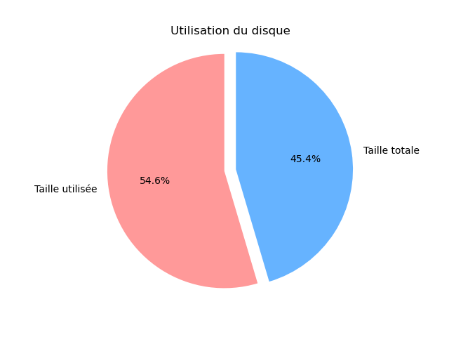

CPU Type: Intel(R) Core(TM) i5-7400 CPU @ 3.00GHz, Fréquence actuelle: 2999.998 MHz, Taille du cache: 6144 KB
20.0 Go
7.23 Go
Version Linux: 6.1.42-antix.1-amd64-smp, Architecture: anticap@antix1
0.67 Go
628.97 Mo
57.11 Mo
eth0
-----------------------------------------------------------------------------------------------------------------------------------------------------------------------------------
Nombre de processus actifs sur la machine : 179
Temps total depuis que le serveur est lancé : up 16 minutes
Ports UDP/TCP ouverts : Connexions Internet actives (seulement serveurs) Proto Recv-Q Send-Q Adresse locale Adresse distante Etat tcp 0 0 0.0.0.0:52669 0.0.0.0:* LISTEN tcp 0 0 127.0.0.1:631 0.0.0.0:* LISTEN tcp 0 0 0.0.0.0:111 0.0.0.0:* LISTEN tcp 0 0 0.0.0.0:22 0.0.0.0:* LISTEN tcp6 0 0 ::1:631 :::* LISTEN tcp6 0 0 :::6566 :::* LISTEN tcp6 0 0 :::111 :::* LISTEN tcp6 0 0 :::56381 :::* LISTEN tcp6 0 0 :::22 :::* LISTEN udp 0 0 0.0.0.0:111 0.0.0.0:* udp 0 0 0.0.0.0:47847 0.0.0.0:* udp 0 0 127.0.0.1:761 0.0.0.0:* udp6 0 0 :::111 :::* udp6 0 0 :::39822 :::*
-----------------------------------------------------------------------------------------------------------------------------------------------------------------------------------
Graphique camembert représentant l'utilisation de la mémoire actuelle :
Graphique camembert représentant l'utilisation du disque
